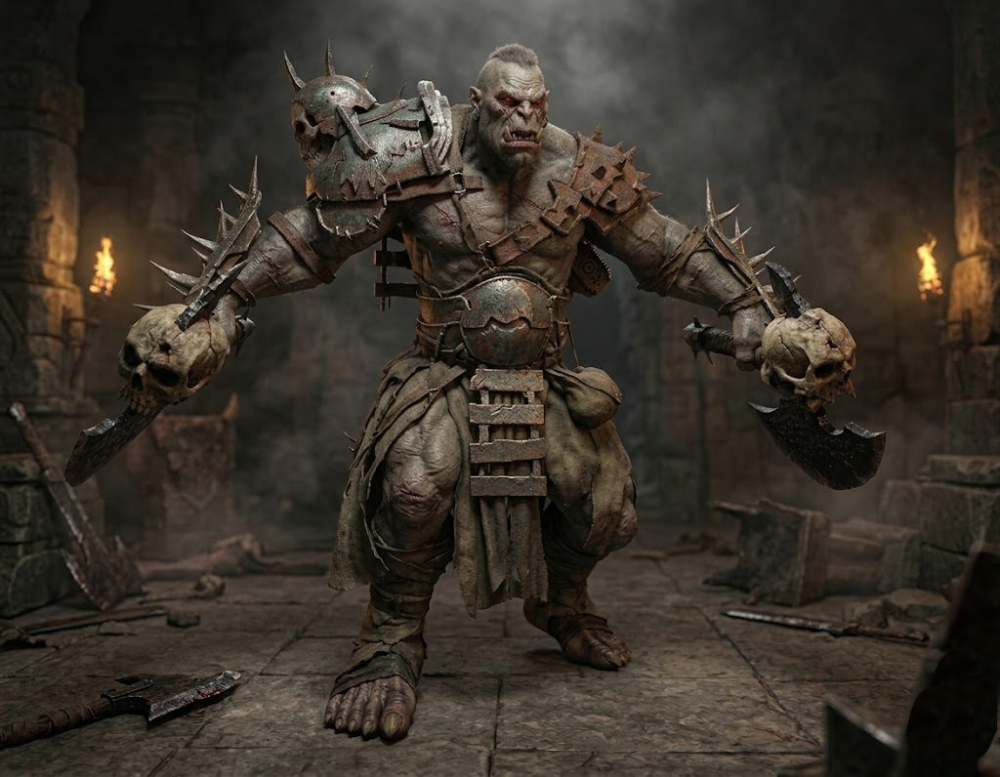

Protagonista
Ets un draconiani capturat pels orcs mentre exploraves els seus erms i muntanyes. No ets un soldat ni un espia: només un explorador dedicat a estudiar la fauna i la flora del món per ajudar en la creació de pocions i remeis que curin els malalts del teu regne. Però els orcs, marcats per una antiga rivalitat amb la teva raça, et confonen amb un infiltrat. La desconfiança i l’odi acumulat entre ambdues espècies ja va provocar una guerra, i qualsevol trobada és vista com una amenaça.


Enemic
Aquest guerrer és un Vigilant de Frontera, encarregat de patrullar els límits del territori orc i capturar qualsevol intrús que s’hi atreveixi a entrar. Armat amb una destral massissa i cobert amb una armadura forjada a mà, és conegut per la seva força bruta i la seva lleialtat absoluta al clan. Per als orcs, qualsevol draconiani que trepitgi les seves terres és un espia, i aquest Vigilant no dubta a actuar abans de preguntar.
Enemic del tutorial
Un antic guerrer orc que va ser sotmès a rituals prohibits per convertir-lo en una arma viventa. La corrupció li ha consumit la ment, però li ha multiplicat la força. Ara només respon a instints primaris: atacar, destruir i protegir la fortalesa subterrània. Els seus ulls vermells brillen amb una fúria incontrolable, i les seves armes, decorades amb cranis, són un recordatori del seu passat com a botxí del clan. Tot i la seva aparença aterridora, és el primer enemic ideal per aprendre les mecàniques bàsiques



Trampes
Les ruïnes orques estan protegides per antics mecanismes dissenyats per eliminar intrusos. Algunes plataformes activen espines metàl·liques quan detecten pes, mentre que altres reaccionen a la proximitat, elevant punxes des d’un nucli vermell carregat d’energia arcana. Són trampes ràpides, letals i imprevisibles, creades per mantenir fora qualsevol que s’atreveixi a desafiar el domini del clan. Si vols, puc fer una versió encara més breu per a una targeta, o una més èpica per donar més ambient.